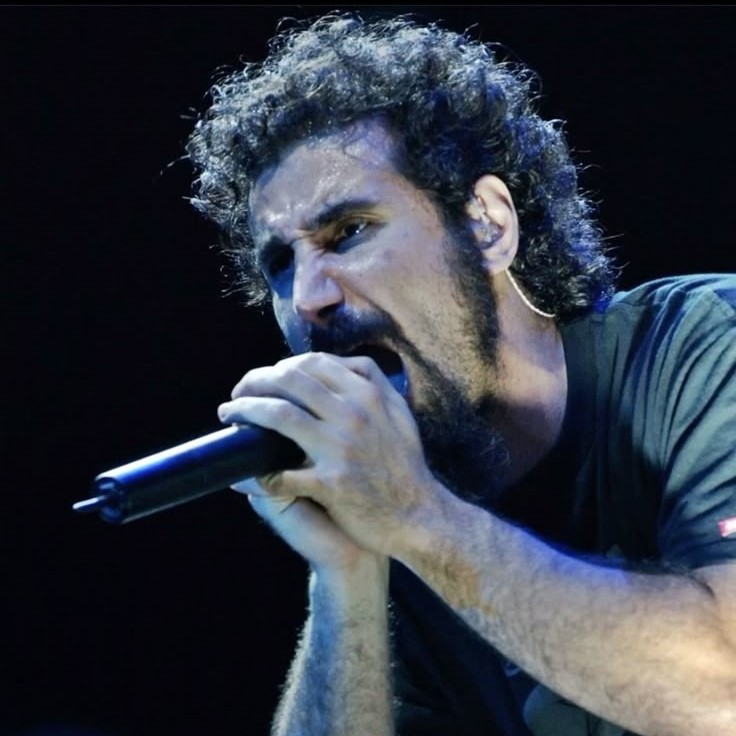
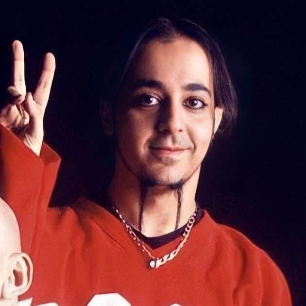
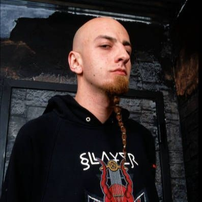
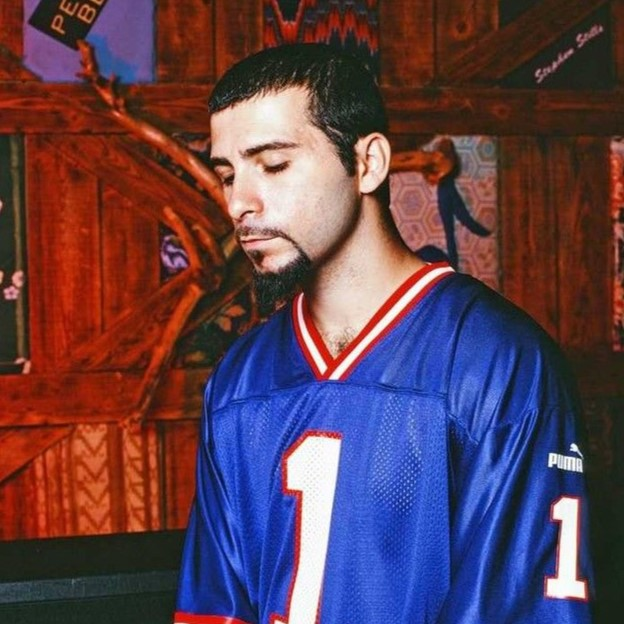

- Serj Tankian.
- Nascido em Beirute, em 21 de agosto de 1967.
- Cantor, compositor, poeta, multi-instrumentista e ativista político armeno-americano, mais conhecido por ser o vocalista, tecladista e compositor da banda.
- @serjtankian

- Daron Malakian.
- Nascido em Los Angeles, em 18 de julho de 1975.
- Cantor, compositor, multi-instrumentista e produtor musical armênio-americano, mais conhecido por ser o guitarrista e vocalista de apoio da banda.
- @daronmalakian

- Shavarsh "Shavo" Odadjian.
- Nascido em Erevã, 22 de abril de 1974.
- Músico armênio-americano, mais conhecido como baixista da banda
- @shavoodadjian

- Hovig "John" Dolmayan.
- Nascido em Beirute, 15 de julho de 1972.
- Baterista da banda.
- @johndolmayan_